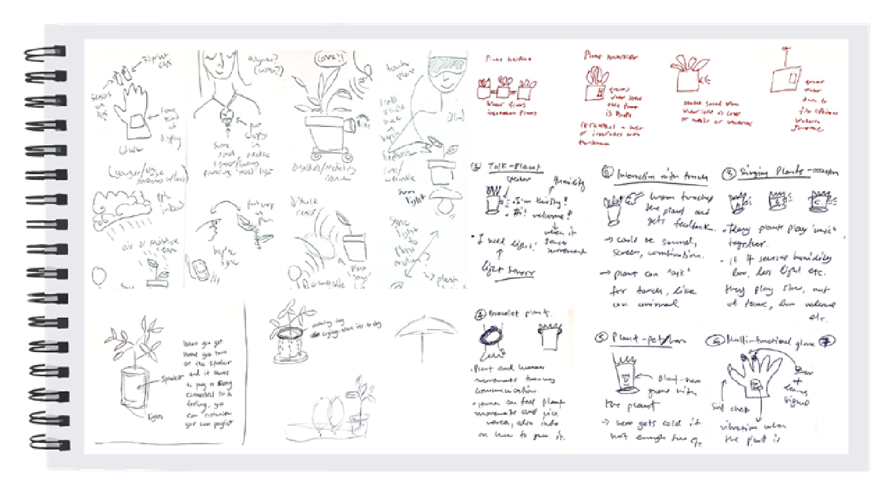
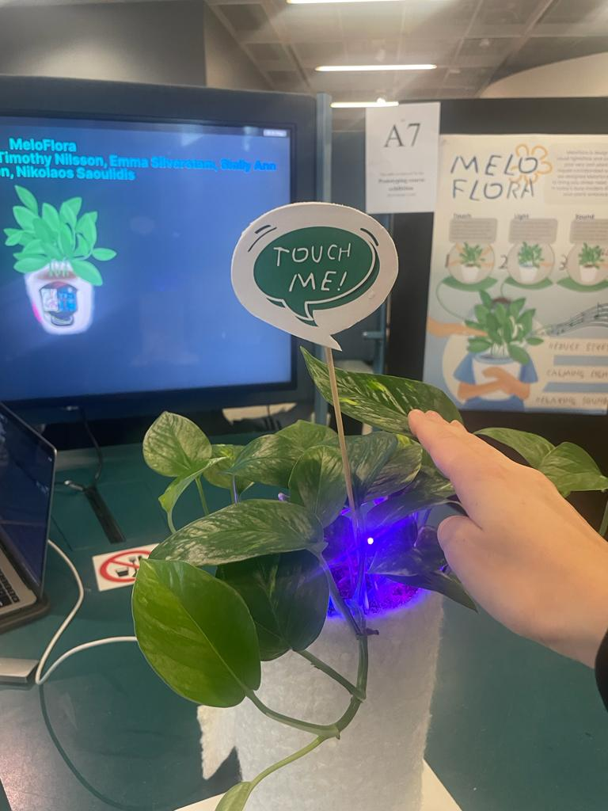

An interactive flowerpot
Type: Group work
When: 2023
Duration: Ten weeks, half time
Project scope: School project in Prototyping in Interaction Design
This project explored how tangible technologies can foster deeper human-plant relationships in urban settings. Through an iterative design process, the team developed an interactive flower pot that responds to touch with light and sound, encouraging emotional engagement and playful interaction. Prototyping played a central role throughout the project, from early sketches and Wizard of Oz testing to a high-fidelity prototype. The final design aimed to create small, reflective moments between people and plants, using sensory feedback to spark curiosity and care.

Sketching
In our project, we used sketching throughout the early stages to visualize and communicate ideas within the team. It helped us explore different directions, compare concepts, and create a shared understanding before moving on to prototypes. Sketching was also useful when preparing to present our ideas to users for the first time. At that stage, we created a simple storyboard to illustrate the flow of the experience and place our solution in context. This lightweight and time-efficient method allowed us to communicate the core idea clearly and get early feedback without spending much time on detailed prototyping.

Prototyping
As the project progressed, our prototypes became increasingly detailed. We began with low-fidelity mockups to explore ideas and gather early reactions, and later moved toward higher-fidelity versions that were closer to the final product. One of the key methods we used was a Wizard of Oz prototype to simulate light and sound interactions and observe how users responded. This approach allowed us to test the experience without developing a fully functional version, making it both time-efficient and flexible for iteration. User feedback from these tests helped us refine several aspects of the design, such as the placement and type of light to improve comfort and usability. The prototype provided a solid foundation for iteration, as it enabled quick adjustments and new rounds of testing.


The result
The project resulted in a refined high-fidelity prototype presented at the final exhibition. This version featured hidden electronics and a polished design that closely represented the intended final product. Prototyping played a key role throughout the process — from early explorations and user testing to the final realization of the concept.
MeloFlora is an interactive plant designed that creates a calming multisensory experience through touch, light, and sound. When the user gently touches the leaves, sensors detect the interaction and trigger a soft blue and purple glow that spreads from the pot up toward the leaves. At the same time, a gentle ambient sound plays, enhancing the feeling of relaxation. The interaction invites the user to connect with the plant through touch, transforming a simple gesture into a calming and mindful experience.

A poster
A poster was created to visually communicate the MeloFlora concept and its key features during the exhibition. It provided an overview of the product, its purpose, and how the interactive elements, touch, light and sound work together to create a calming and mindful experience.